Plusieurs viandes, une seule planche
Tranchées côte à côte, avec leurs piques à la craie, des frites en panier et une salade.
« Un coup de cœur pour la viande maturé, nous avons pris le plateau découverte ! »Fiona S., avis Google 5 étoiles
Restaurant à viande · Charleroi
Des viandes maturées grillées et tranchées sur la planche, un carpaccio en entrée, le tiramisu servi dans la cafetière italienne. Une salle chaleureuse, rue Jules Panier, à Jumet.
Jeudi, vendredi, dimanche midi et soir · samedi soir
4,3 ★★★★219 avis sur Google
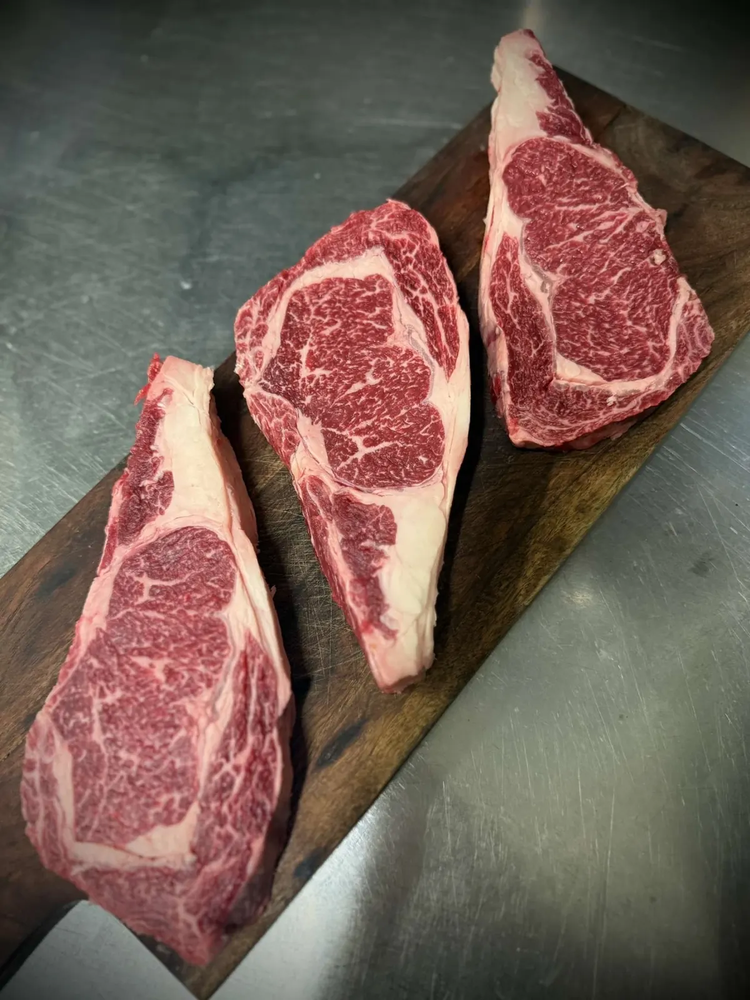
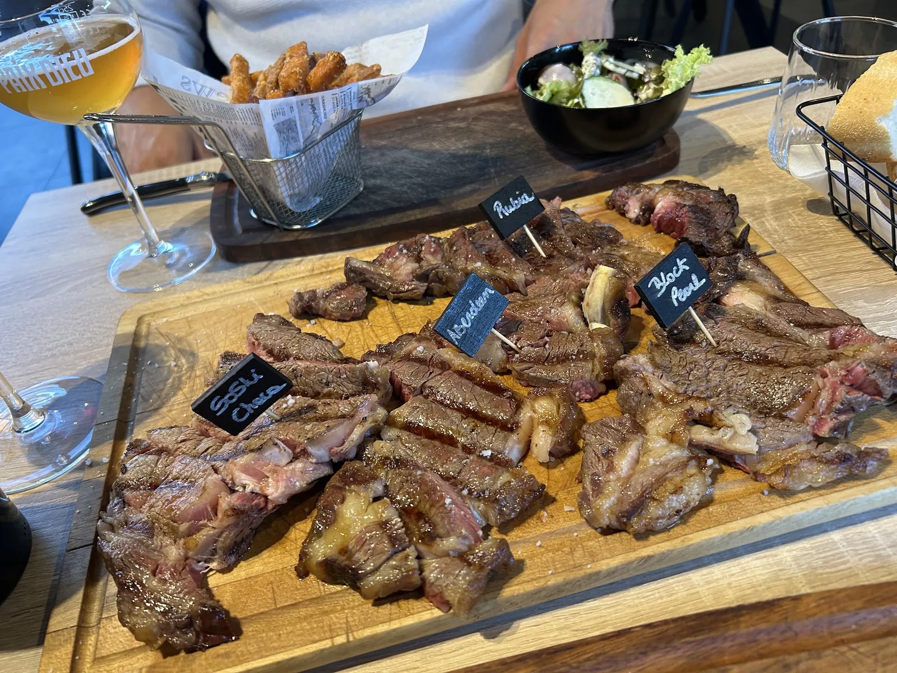
La viande
Les pièces arrivent crues et persillées, repartent grillées et découpées sur une planche en bois, chaque morceau signalé par son pique à la craie. Un client parle de « viandes d'exception à prix doux ».
Tranchées côte à côte, avec leurs piques à la craie, des frites en panier et une salade.
« Un coup de cœur pour la viande maturé, nous avons pris le plateau découverte ! »Fiona S., avis Google 5 étoiles
Les pièces crues, sur la planche de découpe.
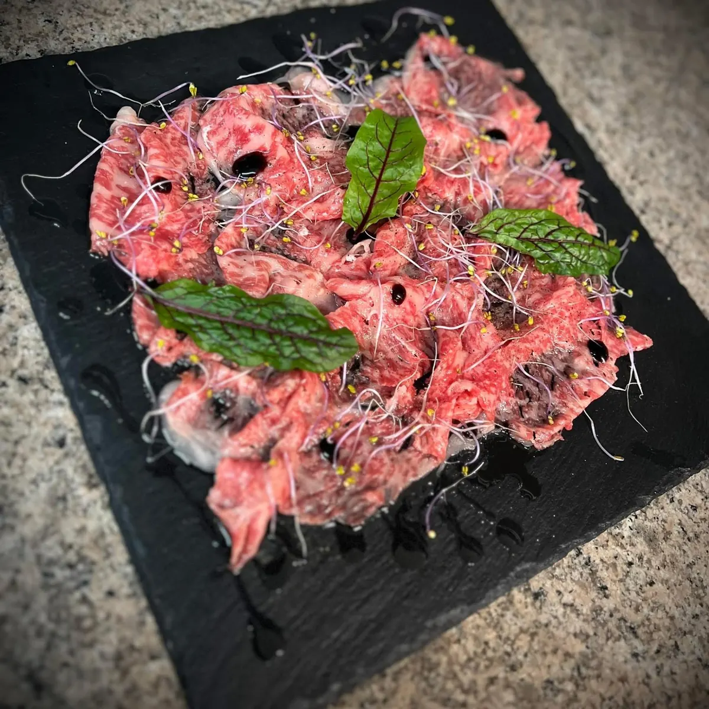
Sur ardoise, jeunes pousses et feuilles de betterave.
Viandes maturées excellentes
Sabrina C., avis Google 5 étoiles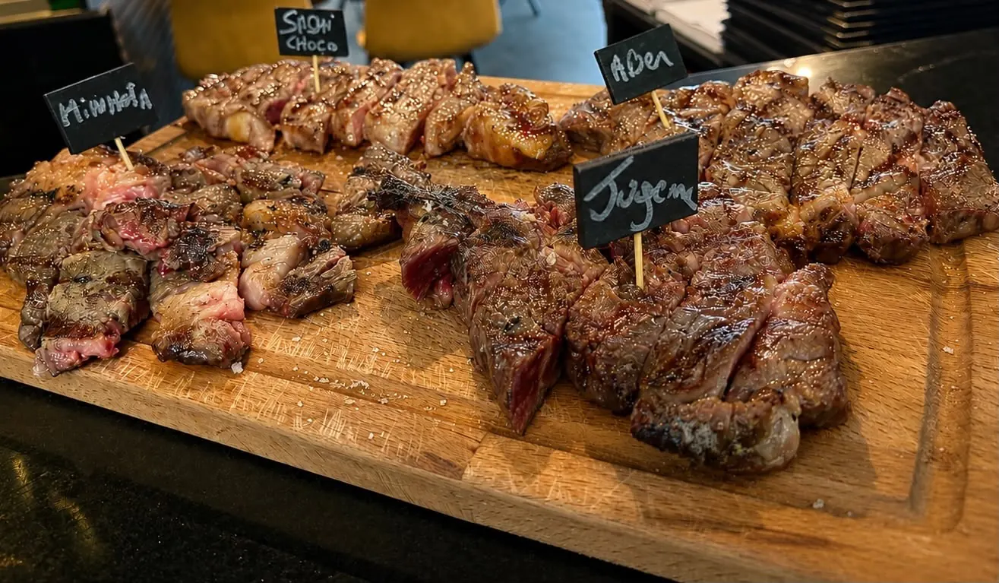
Une grande planche de dégustation, prête à partir en salle.
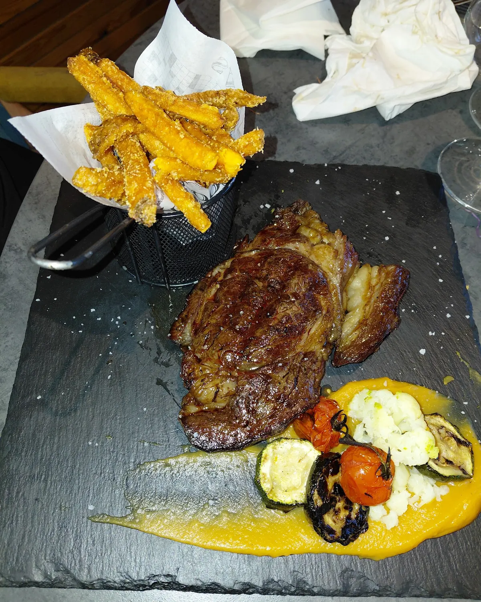
Frites en panier, courgette et tomate grillées, purée.
« viandes d'exception à prix doux (autour de 30-35 €) »avis Google 5 étoiles
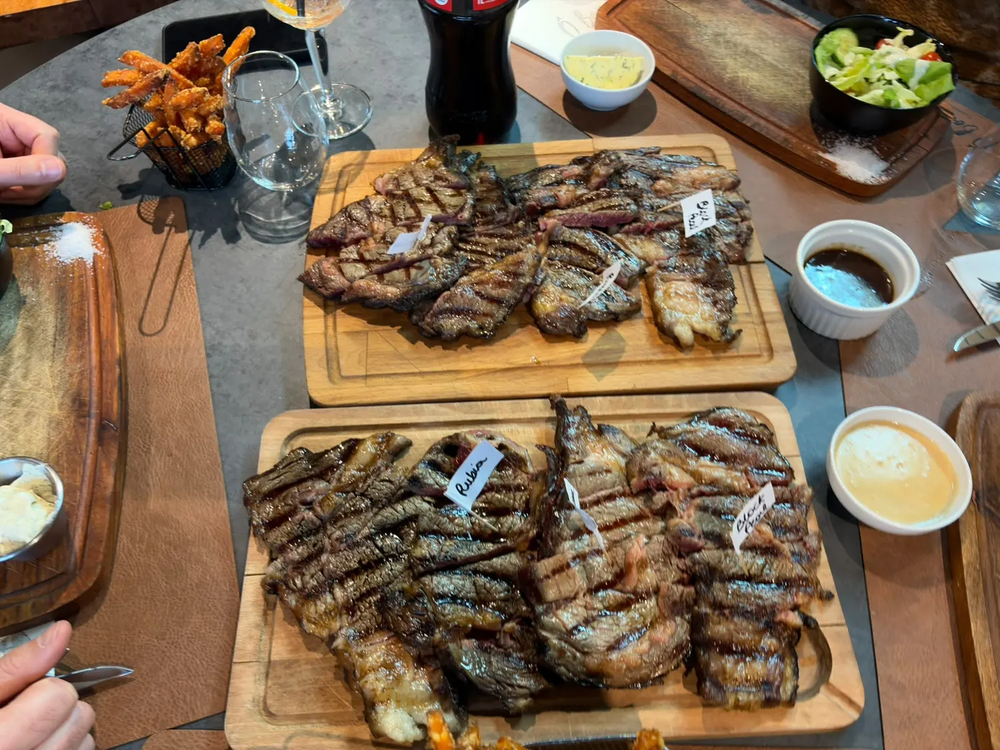
Deux planches, les sauces en ramequin, la salade à côté.
Rubia, Black Pearl, Minhota, Sashi Choco : les noms écrits à la craie sur les piques, tels qu'on les lit sur les photos des clients. Le wagyu Grade 11 et le tomahawk sont cités dans un avis. Photos publiées sur Google.
Avant et après la viande
La viande mène la table, mais elle s'ouvre aussi sur l'Italie et la mer. Il y a la suggestion du jour : un soir, c'était « La Caruzza – Miguel Vergara », raconte mateo f.
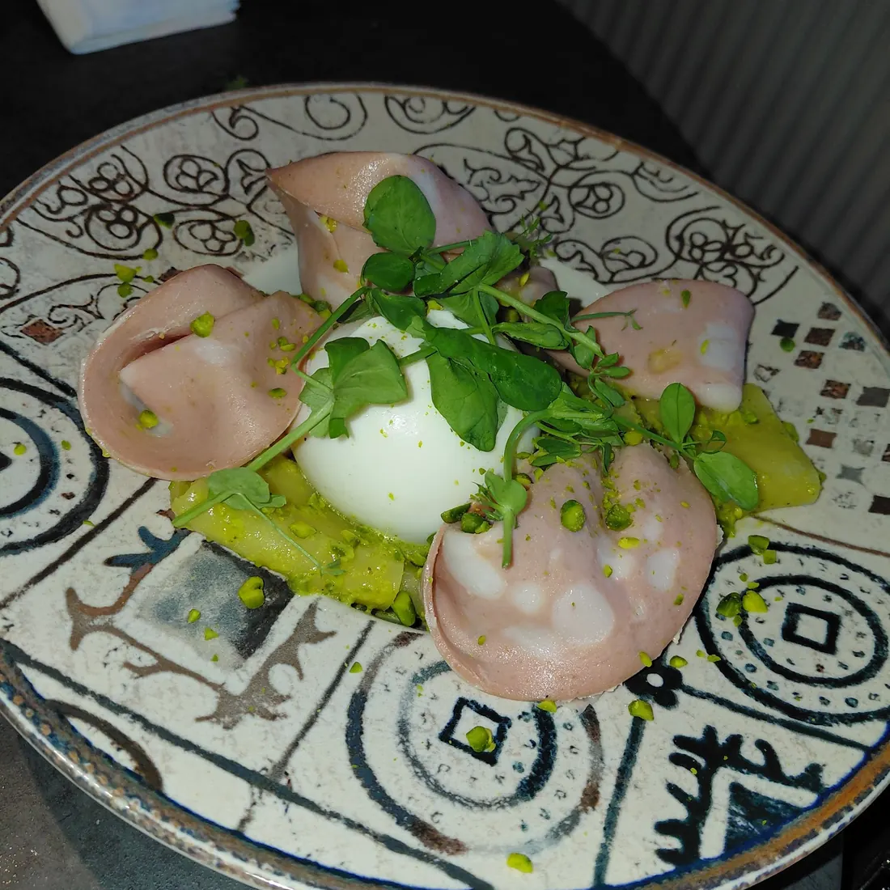
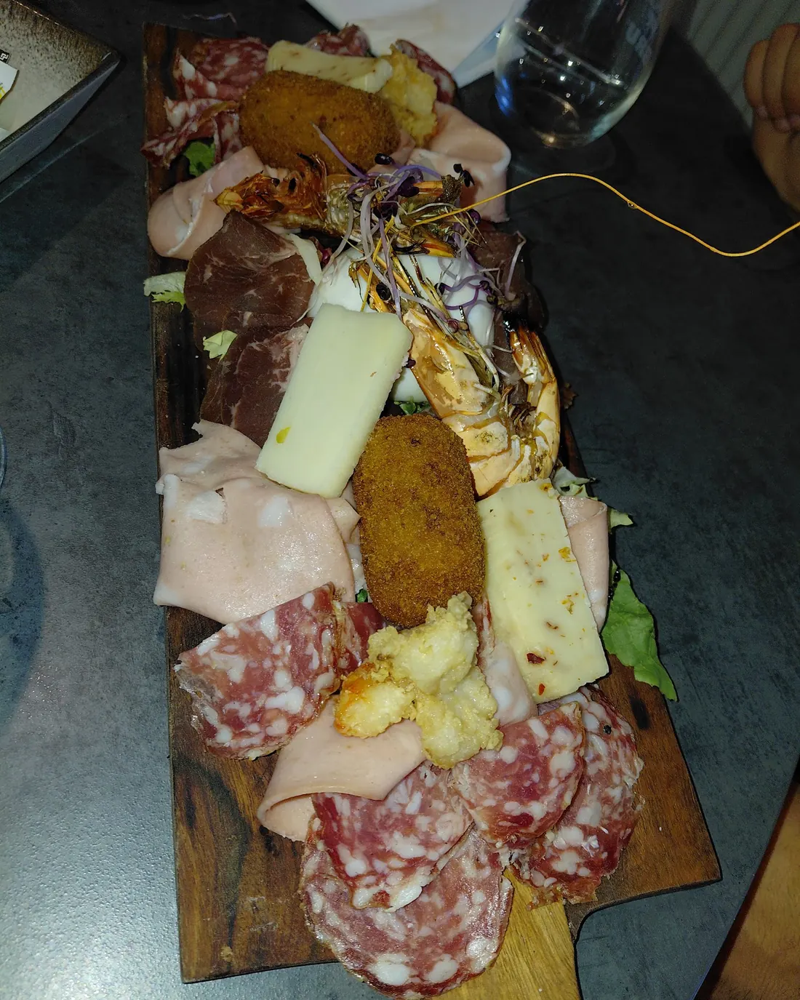
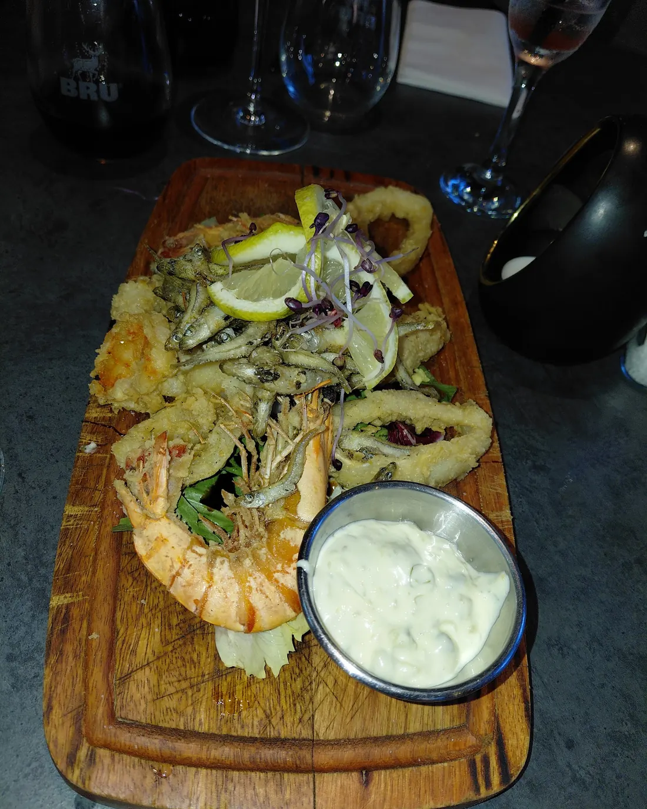
« Et le tiramisu dans la cafetière italienne, waouwwww, trop bon vraiment »
Sabrina C., avis GoogleDes pâtes al dente et des alternatives sans viande, à la même table.
« […] mais aussi de très belles alternatives pour les végétariens. […] les pâtes cuites al dente et les desserts innovants, tout était parfait du début à la fin. »romy m., avis Google 5 étoiles
Réserver
Choisissez le jour, l'heure et le nombre de couverts : jeudi, vendredi et dimanche midi et soir, samedi soir.
« Nous avons déjà hâte de revenir ! »Campa C., sur Google
Déjà sur Tableo ? Ce module peut garder votre agenda Tableo.Plutôt par téléphone ? 0456 16 30 25
La salle
Des tables en bois brut, des fauteuils de velours moutarde, des murs sombres et, au fond, la lumière de la verrière. L'ambiance, Fiona S. la dit « conviviale » et la décoration « très agréable ».
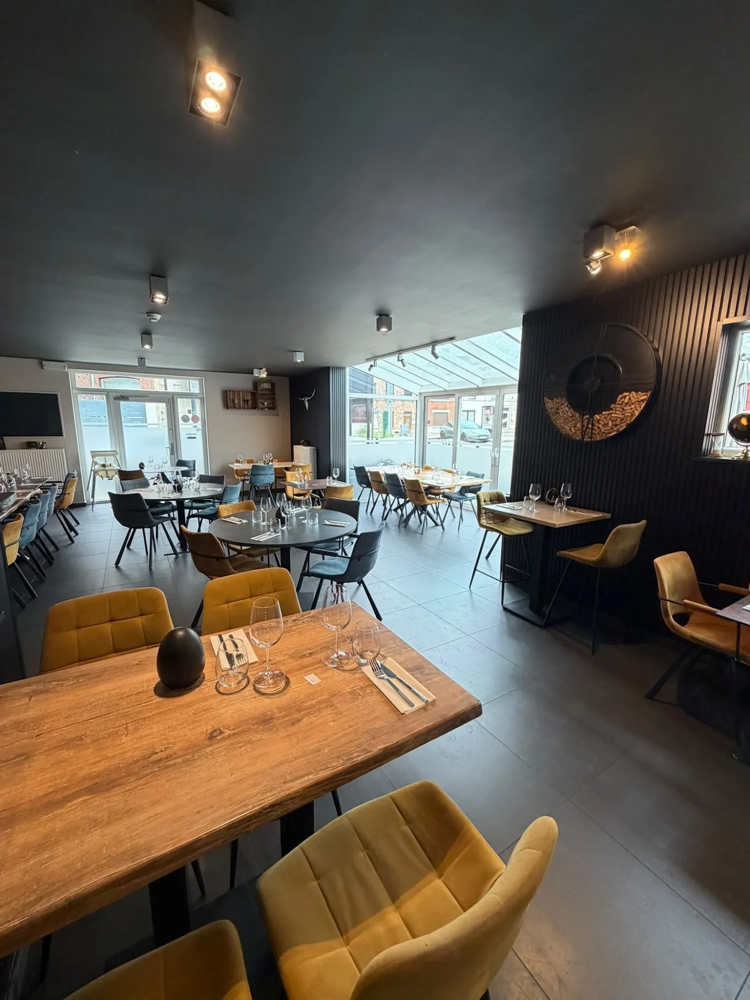
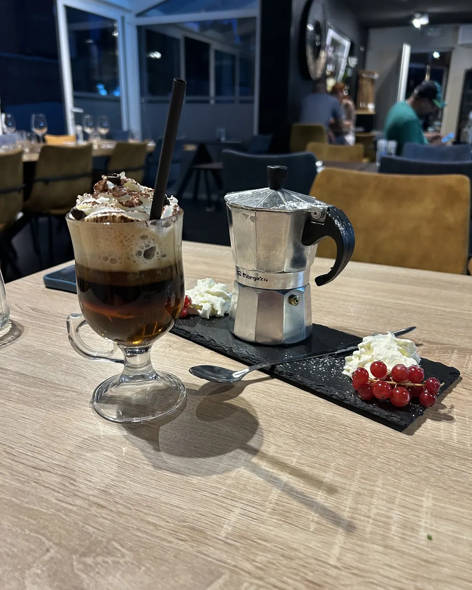
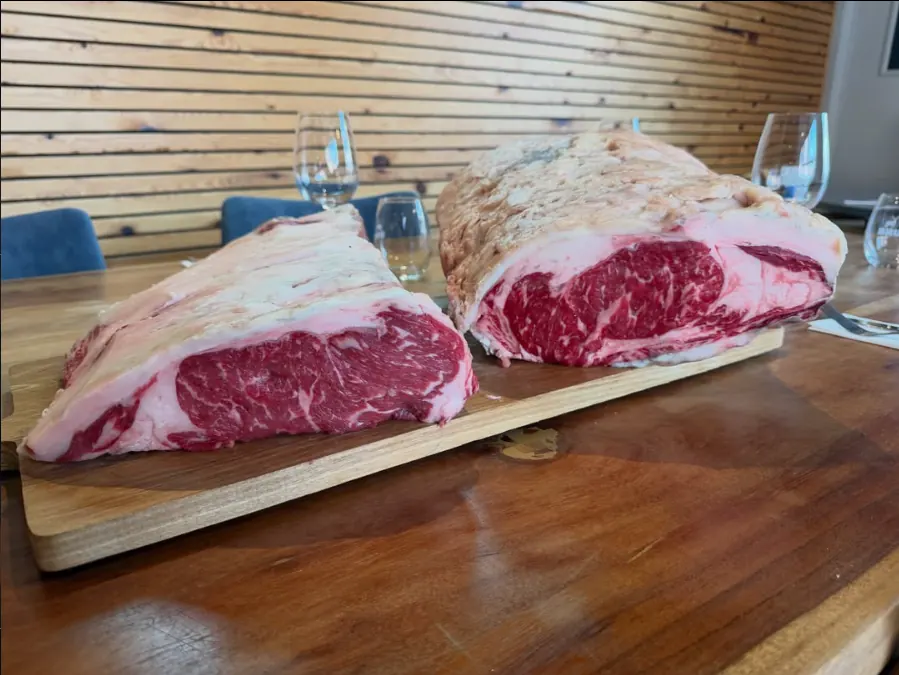
Trois espaces au choix dans le formulaire de réservation du restaurant.
« Charline, la gérante est vraiment attentive a vos besoins », écrit Sabrina C.
« […] les plats sont faits maison avec des produits frais […] », note Fiona S.
« Du cocktail, à l'entrée, au plat. » Et la serveuse de bon conseil, selon Campa C.
Ils l'ont écrit sur Google
Jeudi, vendredi, dimanche midi et soir · samedi soir
| lundi | fermé |
|---|---|
| mardi | fermé |
| mercredi | fermé |
| jeudi | 12 h – 14 h · 18 h 30 – 21 h |
| vendredi | 12 h – 14 h · 18 h 30 – 22 h |
| samedi | 18 h 30 – 22 h |
| dimanche | 12 h – 14 h · 18 h 30 – 22 h |
Rue Jules Panier 1b, 6040 Charleroi (Jumet)